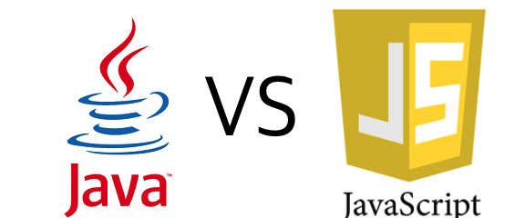
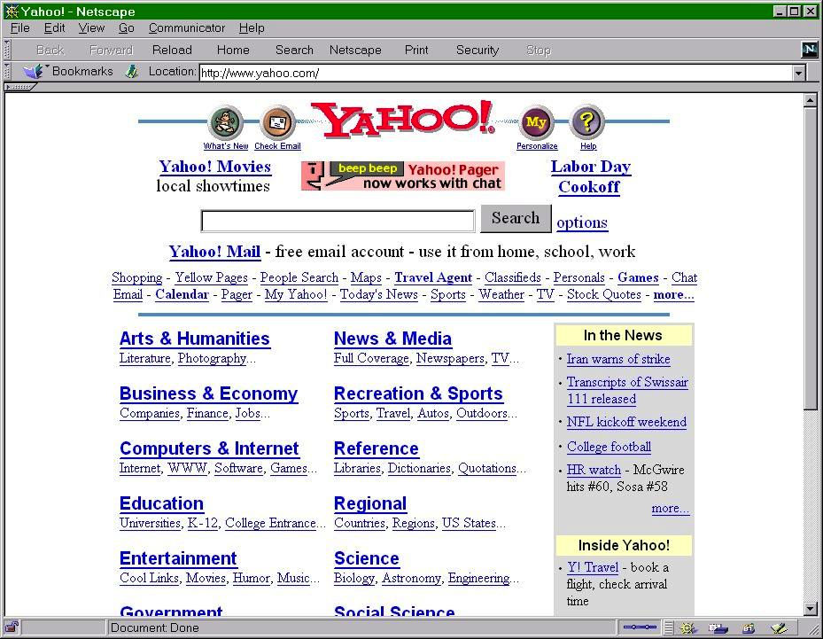
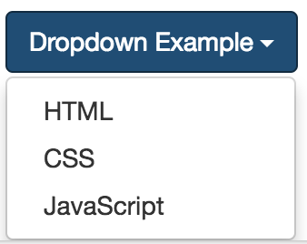
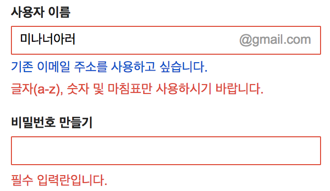

이 글은 자바와 자바스크립트를 혼동하는 사람, 차이점이 궁금한 사람 등을 위하여 쓴 글입니다.
또한 자바스크립트는 다른 언어에 비해 어떤 단점이 있으며 그 단점들을 어떻게 극복해야할지에 대해 다뤄봤습니다.
하고 싶은 말 세 줄 요약.
- 자바스크립트 !== 자바(자바 != 자바스크립트), 자바와 자바스크립트는 같지 않다.
두 언어 간에는 접점이 크지 않고, 자바스크립트는 자바의 인기에 편승할 목적(마케팅 목적)으로 이름을 지은 것 뿐입니다. - 자바 커뮤니티 가서 자바스크립트 질문하거나 자바스크립트 커뮤니티 가서 자바 질문을 하는 건 자제해주세요.
하지 말라는 건 아닌데 질문자 분께서 원하시는 답(틀린 답을 얻을 수도 있고), 양질의 답을 얻을 가능성, 그리고 빠른 응답을 받기가 힘드실 수 있습니다. - 제발 자바 스크립트(Java Script)라고 적어서 혼란을 초래하지 말아주세요.
제발 제발 부탁드립니다. 가끔 보면 화(…)가 날 때도 있습니다.
위와 같이 쓰시는 분들 때문에 이런 혼란이 더 초래되는 것 같습니다.
새로 배우시는 분들께 잘못된 인식을 심어주는 것도 굉장히 위험하다고 보니 제발 부탁드리겠습니다.
목차
- 자바스크립트의 어원
- 자바스크립트의 탄생 목적
- 자바의 탄생 배경
- 자바스크립트는 인터프리트 언어이다??
- 자바는 컴파일 언어다??
- 자바스크립트 언어와 자바의 공통점??
- 왜 자바스크립트 보고 구리다고 할까??
- 자바스크립트는 멀티 패러다임 언어이다.
- 자바스크립트는 더 이상 예전의 자바스크립트가 아니다.
- 자바스크립트를 배우기 전에 잘 만들어진 프로그래밍 언어를 먼저 배우는 것을 추천하는 이유
자바스크립트의 어원
자바스크립트가 처음 개발할 때부터 자바스크립트였던 건 아니었다.
초기에 자바스크립트는 Mocha라는 이름으로 개발되다 추후에 Livescript라는 이름으로 변경되었다.
그러다 자바라는 언어가 인기가 많아지자 그 인기에 편승할 목적, 즉 마케팅 목적으로 자바스크립트라는 이름으로 변경 후 세상에 나오게 되었다.
당시 자바의 개발사인 썬 마이크로시스템과 자바스크립트의 개발사인 넷 스케이프 사는 ‘자바 라이센스’를 공동으로 소유하고 있어서 이런 일이 가능하였다.
자바스크립트의 탄생 목적
해당 언어의 탄생 목적을 보면 어떤 경우에 해당 언어를 써야할지가 명확해진다.

과거 웹사이트는 사용자와 상호 작용이 불가능했으며, 페이지가 상당히 정적인 모습을 띄었다.
따라서 다음과 같은 것들이 불가능하였다.


자바스크립트의 탄생 목적은 이렇듯 페이지의 동적 제어였다.
다른 프로그래밍 언어(Java, C 등등)의 경우 하나의 완성된 프로그램을 만들 목적으로 만들어진 언어에 비해 그 목적 자체가 달랐다.
하지만 자바스크립트라는 언어에서 보듯이 자바스크립트는 스크립트 언어이다.
스크립트 언어는 일반적인 프로그래밍 언어와 달리 하나의 완성된 프로그램보다는 프로그램 사이에 들어가는, 기존의 프로그램들을 제어하거나 보조하는 용도로 많이 쓰인다.
자바의 탄생 배경
Oak(오크)
가전제품에 탑재될 소프트웨어를 만들어야해서 C++을 확장해서 사용하려 했지만 C++로는 부적합하였다.
따라서 C++의 장점을 도입, 단점을 보완한 Oak라는 언어를 만들게 되었다.
Oak는 운영체제에 독립적이라는 장점이 있어 멀티 플랫폼을 지원할 수 있었다.
따라서 가전제품이나 PDA와 같은 소형 기기에 탑재될 목적으로 Oak라는 언어를 만들고 있었다.
자바
여러 종류의 운영체제를 사용하는 컴퓨터들이 통신하는 인터넷이 등장하자
운영체제에 독립적인 Oak가 이에 적합하다고 판단하여 Oak를
인터넷에 적합하도록 그 개발 방향을 바꾸면서 이름을 Java로 변경하였다.
따라서 백엔드, 서버 쪽 진영을 보면 그렇게 자바를 많이 쓰는 이유가 자바가 웹에 적합한 언어이기 때문이다.
또한 오래 전 만들어졌기 때문에 안정성과 다양한 커뮤니티가 형성된 것도 한 몫하는 것 같다.
자바스크립트는 인터프리트 언어이다??
(자알쓰) JIT 컴파일을 참조하자.
자바는 컴파일 언어다??
컴파일하면 소스 코드를 기계어로 변환하는 과정이라고 알고 있는데, 엄밀히 말하면 자바는 소스코드를 기계어로 변환하지 않는다.
자바는 소스 코드를 각 자바 바이트 코드로 변환한다.
그 이후 JVM(Java Virtual Machine)이 그 자바 바이트 코드를 기계어로 변환한다.
즉 실행할 때 마다 매번 자바 바이트 코드를 기계어로 변환하는 JIT 컴파일 방식을 취한다.
자바스크립트 언어와 자바의 공통점??
자바와 자바스크립트가 공통점이 많아서 자바스크립트라고 이름을 붙였다고 주장을 할 수도 있다.
하지만 그 정도 공통점은 C와 Java 사이에도 있는 공통점과 같이 다른 프로그래밍 언어 사이에서도 존재하는 프로그래밍 언어라면 가지고 있어야할 당연한 개념들이다.
자바스크립트는 하나의 특정 언어보다는 여러 언어 사이에서 다양한 개념을 차용한 언어이다.
- 자바에서는 문법과 ‘원시 값 vs 객체 관계’
- 스키마와 오크에서는 일급 객체인 함수
- 셀프에서는 프로토타입 상속
- 펄과 파이썬에서는 문자열, 배열, 정규표현식을 빌려왔다.
왜 자바스크립트 보고 구리다고 할까??
기존에 다른 프로그래밍 언어(Java, C 등등)을 배웠던 사람은 자바스크립트를 배울 때 매우 어려워한다.
개념이 어렵다기 보다는 다른 프로그래밍 언어와 공통된 규칙을 어기는 경우, 당연히 그렇게 동작할 것이라고 생각한 경우를 배신(?)한 경우가 많다.
그래서 깊은 공부 없이 자바스크립트를 학습 후 기존의 프로그래밍 언어와 같이 사용했을 때는 다음과 같은 문제점이 존재한다.
- 함수 단위의 스코프
아래 글도 참고해보자.
(자알쓰) Scope Part. 1
(자알쓰) Scope Part. 212345var i = 2;for(var i=1; i<10; i++) {console.log(i);}console.log(i); // 2가 아니라 10
기존 프로그래밍 언어에서는 당연히 변수의 스코프는 {}블록 단위였다.
즉 당연하다고 생각한 변수 스코프를 무심코 썼다간 큰 코 다치기 쉽상이다.
이를 위해서는 아래와 같이 작업해야한다.
하지만 이와 반대로 자바는 블록 단위의 스코프이다.
- 모듈화 미지원
아래 글도 참고해보자.
(자알쓰) 모듈화 Part. 1
(자알쓰) 모듈화 Part. 2
JavaScript 표준을 위한 움직임: CommonJS와 AMD
자바스크립트의 모든 코드는 전역 스코프를 사용한다.
따라서 아래와 같은 경우에는 다음과 같은 문제점이 존재한다.123456789<html><head></head><body><script src="a.js"></script><script src="b.js"></script><script src="c.js"></script></body></html>
|
|
스크립트 태그 삽입 순서에 따라 a 값이 바뀌게 되고 a 값의 안정성을 보장할 수 없다.
저 값이 어디로 어떻게 튈지 몰라서 에러를 유발하는 코드가 될 수도 있다.
만약 누군가가 a에 3이라는 값을 넣었으면 3은 숫자이고 인덱스로 접근이 불가능하니 오류가 나기 마련이다.
따라서 다음과 같이 해결해야한다.
|
|
1번 솔루션인 네임스페이스 패턴은 전역 스코프를 더럽힌다는 단점(전역 스코프에 변수 a와 b가 두둥실 떠다니게 됨.)이 존재한다.
외부에서 참조하려면 어쩔 수 없이 전역 스코프에서 모듈을 구현해야하지만 외부에서 참조할 일 없는 변수는
자바스크립트의 함수 단위의 스코프를 활용한 즉시 실행 함수 패턴(IIFE, Immediately Invoked Function Expressions)를 사용하면 된다.
즉 a.js와 b.js는 서로 다른 스코프를 가지게 된다는 의미이고 전역 스코프가 아닌 로컬 스코프(함수는 별도의 스코프를 형성하므로)를 사용하게 되는 격이다.
위에서 보이는 문제점들은 전부 스코프가 너무 넓다는 문제점들이다.
스코프가 너무 넓으면 여러 곳에서 접근이 가능하고, 여러곳에서 접근이 가능하다는 소리는 내가 작성한 코드를 다른 개발자가 쉽게 수정이 가능하단 뜻이며
그 코드로 인해 프로그램이 뻗을 수도 있으므로 스코프는 좁은 것이 최대한 코드의 안정성을 보장할 수 있는 길이라고 할 수 있을 것 같다.
하지만 자바에서는 모듈화를 클래스나 패키지를 통해 구현할 수 있는 것으로 알고 있다.
- 호이스팅
(자알쓰) Hoisting을 참고하자.
자바에서는 호이스팅이란 개념이 존재하지 않는다.
- 동적 타입
자바스크립트는 기본적으로 변수를 만들 때 변수의 타입을 지정하지 않는다.
따라서 해당 변수에는 문자열이 담겼다가 숫자가 담길 수도 있다.
처음에는 이러한 유연함 때문에 변수의 타입을 생각하지 않고 코딩하기 때문에 코딩이 더 빨리 되는 것 같아서 좋다.
하지만 몇 달 후, 내가 짠 코드도 보기 이해하기 힘든데 남이 짠 코드를 유지보수 해야하는 경우,
혹은 앱의 규모가 대규모로 커지는 경우에는 과연 변수에 어떤 값이 담겼는지 잘 알아낼 수 있을까??12345678910111213// 3개월 전에 작성한 util.jsvar util = util || {};util.a = function(a) {return +a; // 숫자로 변환하여 반환}// 3개월 후에 내가 수정하거나 작성해야할 app.jsvar b = util.a('aa');// 나는 util.a의 결과가 배열인 줄 알고 splice 메소드를 썼다.// 하지만 util.a의 결과는 숫자이고 숫자에는 splice 메소드가 존재하지 않으니 에러가 뜰 것이다.// 만약 정적 타입 언어였다면 util.a의 반환값이 숫자인 것을 알고 당연히 에러라고 에디터에 밑줄을 그어줄테지만// 변수의 타입이 존재하지 않는 자바스크립트 같은 경우에는 실행했을 때만, 즉 런타임 시에만 오류를 알 수 있다는 단점이 존재한다.console.log(a.splice(0));
자바는 정적 타입의 언어, 즉 변수를 생성할 때 어떤 타입의 변수인지 선언해야하고 죽었다 깨어나도 변수의 타입은 바뀌지 않는다.
- var 없이 변수 선언하기
이런 코드 보면 조금 극혐하는 편이다.
스코프는 좁을 수록 코드가 안전해진다고 알고 있는데 오히려 스코프를 넓히는 코딩 패턴이다.
다음 코드를 살펴보자.123456789101112131415161718var a = function() {// 변수 a를 var 없이 선언했다.// 일단 현재 스코프에 변수 a가 없으므로 상위 스코프로 이동한다.// 그리고 그 스코프에 존재하는 변수 a의 값을 재할당한다.a = 3;var b = function() {// 변수 b를 var 없이 선언했다.// 일단 현재 스코프에 변수 b가 없으므로 상위 스코프로 이동한다.// 그리고 그 스코프에 존재하는 변수 b의 값을 재할당한다.b = 2;};b();console.log(b); // 함수 b 실행 이후 b는 더이상 함수가 아닌 숫자 2이다.};var b = 3;a();console.log(a); // 함수 a 실행 이후 a는 더이상 함수가 아닌 숫자 3이다.console.log(b); // 얘는 3 그대로이다.
어떤 글들을 보면 var 없으면 전역에 변수를 생성한다고 하는데 그게 아니라 스코프 하나씩 위로 타고 올라가서 있는지 없는지 파악 후
해당 변수가 존재하는 스코프(없으면 전역까지 가서 생성)에 변수를 재할당 하는 것이다.
여튼 이런 실수를 방지하려면 Strict Mode를 무조건 사용하자.
ES2015+라면 Strict Mode를 사용할 필요가 없다.
자바는 이렇게 변수를 생성하는 키워드를 생략해서 변수를 생성할 수 없다.
자바스크립트는 멀티 패러다임 언어이다.
자바스크립트는 여러 언어로부터 개념을 빌려온 언어이다.
셀프에서는 프로토타입 상속 개념을 빌려왔기 때문에 객체 지향 언어에서 말하는 상속의 개념도 구현할 수 있다.
따라서 자바스크립트는 객체 지향 프로그래밍이 가능하다.
또한 스키마와 오크에서는 일급 객체인 함수 개념을 빌려왔기 때문에 함수형 프로그래밍도 가능하다.
객체 지향 프로그래밍 관점에서의 자바스크립트
|
|
하지만 이마저도 다음과 같은 문제점이 존재한다.
여기서 말하는 멤버는 변수+메소드를 뜻한다.
static 멤버가 존재하지 않는다.
인스턴스(객체)를 생성하기 이전에 사용 가능한 static 멤버가 존재하지 않는다.
ES2015의 class syntax(말이 class지, 그 내부를 들여다보면 여전히 함수를 통해 객체를 생성하고 있다.)가 도입되면서 static 멤버의 사용도 가능해졌다.123456789const Person = class {static sayHello() {console.log('hello');}// static 변수는 아직 Stage-2 단계이다.// static b = 'b';};Person.sayHello(); // helloprivate 멤버를 만들지 못한다.
private 멤버가 없다면 아래와 같은 문제점들이 존재하게 된다.1234567891011var Person = function(name, age) {if(!name) throw '이름을 입력하시오';if(!age) throw '나이를 입력하시오';this.age = age;this.name = name;};var p = new Person('양권성', null); // 정상적으로 오류를 뿜어냄.var p2 = new Person('양권성', 25);p2.age = null; // age를 재할당 했을 때는 오류를 잡아낼 수가 없음.
이를 위해서는 ES2015의 class, 유일한 값을 만들어내는 Symbol, 외부에서 접근 불가능한 별도의 스코프를 만들어냄과 동시에 실행하는 즉시 실행 함수 패턴,
내부 스코프에 있는 변수(private 변수)들을 접근하기 위해 클로저 사용, private 변수들에 대한 유효성 검사(?)를 위한 getter/setter 메소드가 사용되었다.
사실 Reflect.ownKeys나 Object.getOwnPropertySymbols를 이용하면 Symbol로 만든 private 변수에 접근이 가능하지만,
private 접근 지정자가 존재하는 자바에도 Reflect를 사용하면 Private Filed에 접근하기가 가능하다고 한다.
Reflect를 사용 했을 때도 private 멤버들을 숨기고 싶다면 ES6 Class에서 private member를 정의하는 방법를 참조하자.
자바는 이런 static 멤버, private 접근 지정자, 메소드 오버라이딩, 오버로딩 등등과 같이 자바스크립트에서 지원하는 것은 물론 지원하지 않는 객체 지향 개념들도 모두 지원하고 있는 언어이다.
함수형 프로그래밍 관점에서의 자바스크립트
두말하면 입아프니 함수형 프로그래밍(JS)이란…?을 참고하자.
자바에서는 자바8에 Lambda가 출현한 이후 함수형 프로그래밍이 가능해졌는지 모르겠지만 그 이전에는 불가능한 것으로 알고 있다.
왜냐하면 자바에서는 함수가 일급 객체가 아니기 때문에 함수의 매개변수로 넘길 수 없기 때문이다.
자바스크립트는 더 이상 예전의 자바스크립트가 아니다.
예전에 자스의 출현 목적은 페이지의 동적 제어였지만 브라우저를 탈출한 JS(Node.js)의 출현과 ES2015의 탄생 이후로
이런 걸 자바스크립트로 할 수 있다고??와 같은 걸 많이 할 수 있게 되었다.
- 서버 구현(Node.js)
- 파일 읽고 쓰기(Node.js)
- CLI 프로그램 만들기 (예) babel, webpack 등등)
- 모바일 앱 만들기(Ionic2, React Native)
- 데스크탑 앱 만들기(Electron)
- 크롤링 하기(PhantomJS, JSDom 등등)
- 기타 등등
이제 자바스크립트는 어엿한 프로그래밍 언어의 반열에 올랐다고 볼 수 있고, 그 목적도 이제 페이지의 동적 제어에 벗어나서 프로그래밍 언어 관점으로 바라보고 학습할 자세가 필요하다.
자바스크립트를 배우기 전에 잘 만들어진 프로그래밍 언어를 먼저 배우는 것을 추천하는 이유
ES2015의 출현으로 자바스크립트의 많은 단점들이 보완됐지만 여전히 단점들(동적 타입, 인터페이스의 부재, 다른 언어의 좋은 개념들 등등)이 존재한다.
ES5 시절에는 아주 홍수 같이 많았다.(호이스팅, 모듈화, 함수단위 스코프 등등)
이런 문제점은 누가 짚어주지 않는 이상 모르는 경우가 허다하다.
하지만 만약 자바나 C 같은 이런 단점들이 존재하지 않는 언어들을 먼저 배웠다면
어? 동적 타입 언어네? 정적 타입으로 도와주는 라이브러리가 없나?
모듈화는 어떻게 구현해야할까?
등등과 같은 고민들을 누가 말해주지 않더라도 혼자서라도 해볼 가능성이 조금이라도 올라가며 누군가 설명을 해주면 쉽게 이해가 가능하다.
또한 자바 등등과 같이 잘 만들어지지 않은 언어를 배우지 않다보면 캡슐화, private 멤버의 필요성을 느낄 수가 없게 된다.
정통 프로그래밍 언어를 배웠다면 이게 없으면 당연히 문제라고 생각해볼만한 개념들이 자바스크립트에는 상당히 많다.
물론 그 배경에는 짧은 개발 기간과 페이지 동적 제어라는 목적 때문이었겠지만…